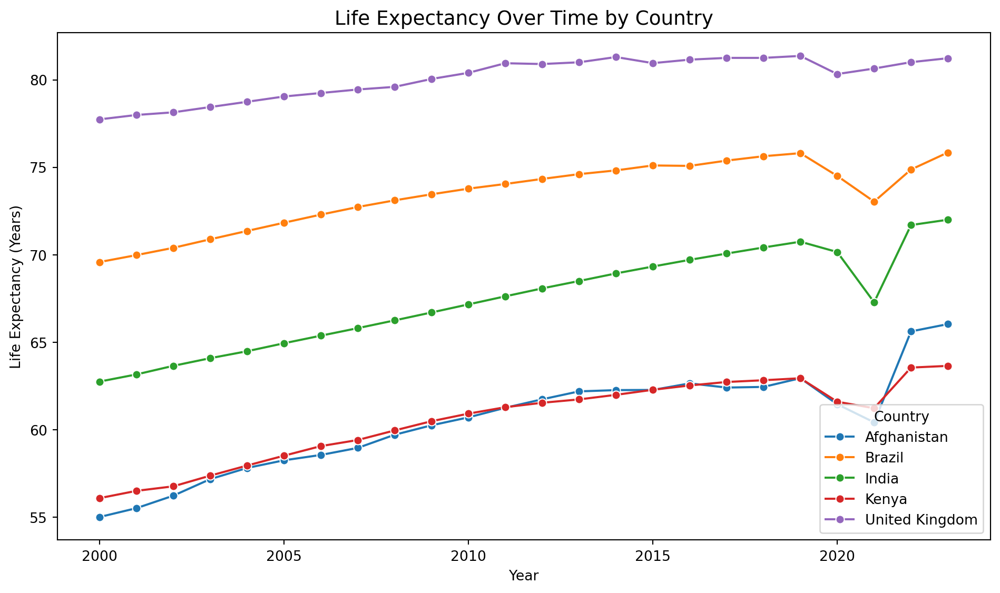
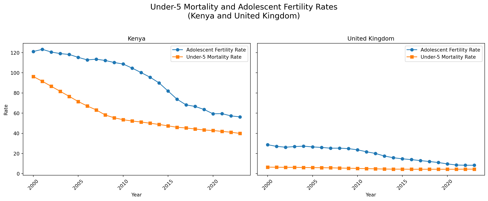
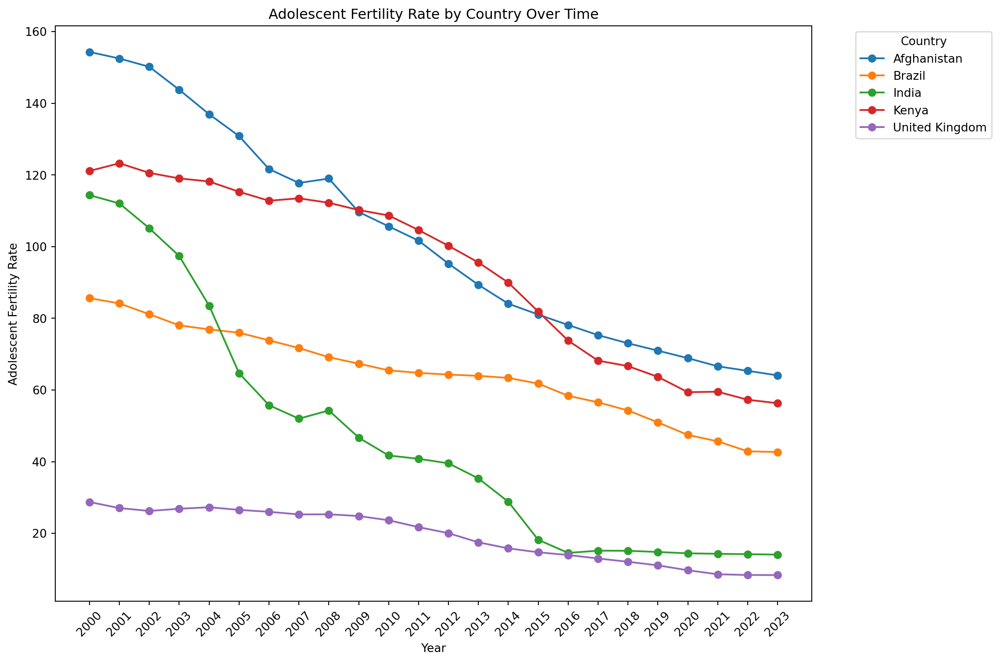
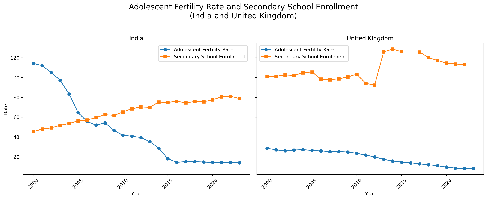
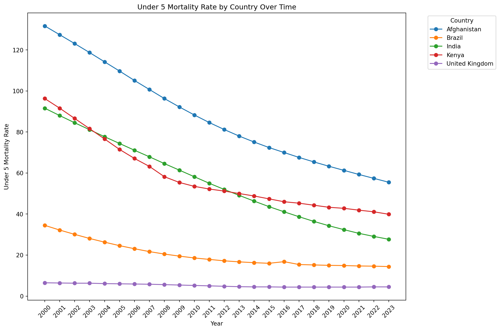
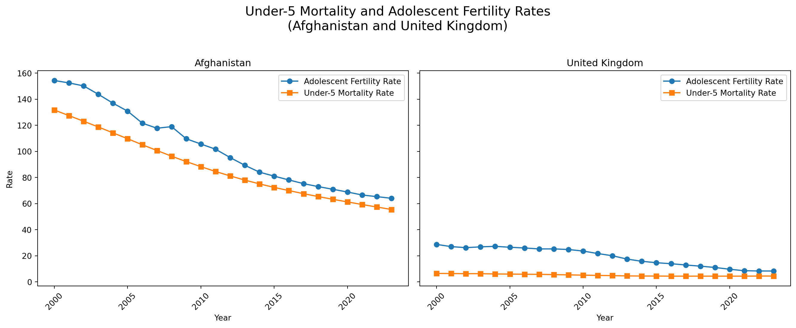

# Import Libraries and Read Cleaned Dataset
import pandas as pd
import matplotlib.pyplot as plt
import seaborn as sns
import plotly.express as px
df = pd.read_csv('population_dynamics_clean.csv')Data Analysis
As stated in our introduction, our research question is: How do population dynamics differ between countries of different income-levels? To answer this question, we will examine three different indicators: life expectancy, adolescent fertility, and under-5 mortality rate.
We’ll be using the pandas, matplotlib, seaborn, and plotly libraries for our analysis.
Let’s begin by analyzing a primary population dynamic indicator: life expectancy.
Life Expectancy Analysis
We’ll begin by looking at life expectancy over time by country. The following figure is a plot of life expectancy in years from 2000 - 2023.
Code
# Life Expectancy Rate by Country Over Time
plt.figure(figsize=(10, 6))
sns.lineplot(
data=df,
x="year",
y="life_expectancy",
hue="country",
marker="o"
)
plt.title("Life Expectancy Over Time by Country", fontsize=14)
plt.xlabel("Year")
plt.ylabel("Life Expectancy (Years)")
plt.legend(title="Country")
plt.tight_layout()
plt.show()

Based on the different lines, we see a generally increasing trend in life expectancy for all 5 countries. Additionally, there is a signficant dip in life expectancy for all countries around 2019-2021. This is likely an effect of the COVID-19 global pandemic. According to the World Health Organization, global life expectancy deceased 1.8 years to 71.4 years from 2019 to 2021, which is the life expectancy we saw in 2012. This, we can see from Figure 1, is approximately true for our selection of countries.
While we see some general parallels, the life expectancy within these countries still vary drastically. We will examine the average life expectancies to get a clearer picture.
Code
# Average Life Expectancy Rate by Country
avg_life_exp = df.groupby("country")["life_expectancy"].mean().reset_index()
country_order = ['Afghanistan', 'Kenya', 'India', 'Brazil', 'United Kingdom']
plt.figure(figsize=(8, 5))
sns.barplot(data=avg_life_exp, x="country", y="life_expectancy", order=country_order)
plt.title("Average Life Expectancy (2000–2023) by Country")
plt.ylabel("Average Life Expectancy (Years)")
plt.xlabel("Country")
plt.tight_layout()
plt.show()
A table of average life expectancies is also shown below:
Code
# Average Life Expectancy by Country
table_1= df.groupby('country', as_index=False)['life_expectancy'].mean().round(3)
table_1.columns = ['Country', 'Average Life Expectancy']
table_1| Country | Average Life Expectancy | |
|---|---|---|
| 0 | Afghanistan | 60.492 |
| 1 | Brazil | 73.438 |
| 2 | India | 67.453 |
| 3 | Kenya | 60.535 |
| 4 | United Kingdom | 80.094 |
Table 1: Average Life Expectancy from 2000 - 2023
People in high income countries have higher life expectancies than those in low income countries. In other words, life expectancy seems to be positively correlated with a country’s GNI.
Adolescent Fertility Analysis
Code
# Adolescent Fertility Rate by Country Over Time
# Prepare the data for plotting
pivot_df = df.pivot(index='year', columns='country', values='adolescent_fertility')
# Plot the line graph
plt.figure(figsize=(12, 8))
pivot_df.plot(ax=plt.gca(), marker='o')
plt.title('Adolescent Fertility Rate by Country Over Time')
plt.xlabel('Year')
plt.ylabel('Adolescent Fertility Rate')
plt.legend(title='Country', bbox_to_anchor=(1.05, 1), loc='upper left')
plt.xticks(pivot_df.index, rotation=45)
plt.tight_layout()
plt.show()
Code
# Average Adolescent Fertility Rate by Country
table_2= df.groupby('country', as_index=False)['adolescent_fertility'].mean().round(3)
table_2.columns = ['Country', 'Average Adolescent Fertility']
table_2| Country | Average Adolescent Fertility | |
|---|---|---|
| 0 | Afghanistan | 102.324 |
| 1 | Brazil | 64.429 |
| 2 | India | 46.115 |
| 3 | Kenya | 93.824 |
| 4 | United Kingdom | 19.276 |
Table 2: Average Adolescent Fertility Rates from 2000 - 2023
Code
# Adolescent Fertility Rate and Secondary School Enrollment
# Prepare the data for plotting
pivot_df_adolescent_fertility = df.pivot(index='year', columns='country', values='adolescent_fertility')
pivot_df_secondary_school_enrollment = df.pivot(index='year', columns='country', values='secondary_school_enrollment')
# Plot the graphs
fig, axes = plt.subplots(1, 2, figsize=(14, 6), sharex=True, sharey=True)
# India
axes[0].plot(
pivot_df_adolescent_fertility.index,
pivot_df_adolescent_fertility['India'],
marker='o',
label='Adolescent Fertility Rate',
color='tab:blue'
)
axes[0].plot(
pivot_df_secondary_school_enrollment.index,
pivot_df_secondary_school_enrollment['India'],
marker='s',
label='Secondary School Enrollment',
color='tab:orange'
)
axes[0].set_title('India')
axes[0].set_xlabel('Year')
axes[0].set_ylabel('Rate')
axes[0].legend()
axes[0].tick_params(axis='x', rotation=45)
# United Kingdom
axes[1].plot(
pivot_df_adolescent_fertility.index,
pivot_df_adolescent_fertility['United Kingdom'],
marker='o',
label='Adolescent Fertility Rate',
color='tab:blue'
)
axes[1].plot(
pivot_df_secondary_school_enrollment.index,
pivot_df_secondary_school_enrollment['United Kingdom'],
marker='s',
label='Secondary School Enrollment',
color='tab:orange'
)
axes[1].set_title('United Kingdom')
axes[1].set_xlabel('Year')
axes[1].legend()
axes[1].tick_params(axis='x', rotation=45)
fig.suptitle('Adolescent Fertility Rate and Secondary School Enrollment\n(India and United Kingdom)', fontsize=16)
plt.tight_layout(rect=[0, 0.03, 1, 0.95])
plt.show()
Under-5 Mortality Rate Analysis
Code
#Under 5 Mortality Rate by Country Over Time
# Prepare the data for plotting
pivot_df = df.pivot(index='year', columns='country', values='under5_mortality')
# Plot the line graph
plt.figure(figsize=(12, 8))
pivot_df.plot(ax=plt.gca(), marker='o')
plt.title('Under 5 Mortality Rate by Country Over Time')
plt.xlabel('Year')
plt.ylabel('Under 5 Mortality Rate')
plt.legend(title='Country', bbox_to_anchor=(1.05, 1), loc='upper left')
plt.xticks(pivot_df.index, rotation=45)
plt.tight_layout()
plt.show()
Code
# Average Under 5 Mortality Rate by Country
table_3= df.groupby('country', as_index=False)['under5_mortality'].mean().round(3)
table_3.columns = ['Country', 'Average Under-5 Mortality']
table_3| Country | Average Under-5 Mortality | |
|---|---|---|
| 0 | Afghanistan | 87.438 |
| 1 | Brazil | 20.179 |
| 2 | India | 55.700 |
| 3 | Kenya | 58.158 |
| 4 | United Kingdom | 5.179 |
Table 3: Average Under-5 Mortality Rates from 2000 - 2023
Code
# Under 5 Mortality Rate and Adolescent Fertility Rate
# Prepare the data for plotting
pivot_df_under5_mortality = df.pivot(index='year', columns='country', values='under5_mortality')
pivot_df_adolescent_fertility = df.pivot(index='year', columns='country', values='adolescent_fertility')
# Plot the graphs
fig, axes = plt.subplots(1, 2, figsize=(14, 6), sharex=True, sharey=True)
# Afghanistan
axes[0].plot(
pivot_df_adolescent_fertility.index,
pivot_df_adolescent_fertility['Afghanistan'],
marker='o',
label='Adolescent Fertility Rate',
color='tab:blue'
)
axes[0].plot(
pivot_df_under5_mortality.index,
pivot_df_under5_mortality['Afghanistan'],
marker='s',
label='Under-5 Mortality Rate',
color='tab:orange'
)
axes[0].set_title('Afghanistan')
axes[0].set_xlabel('Year')
axes[0].set_ylabel('Rate')
axes[0].legend()
axes[0].tick_params(axis='x', rotation=45)
# United Kingdom
axes[1].plot(
pivot_df_adolescent_fertility.index,
pivot_df_adolescent_fertility['United Kingdom'],
marker='o',
label='Adolescent Fertility Rate',
color='tab:blue'
)
axes[1].plot(
pivot_df_under5_mortality.index,
pivot_df_under5_mortality['United Kingdom'],
marker='s',
label='Under-5 Mortality Rate',
color='tab:orange'
)
axes[1].set_title('United Kingdom')
axes[1].set_xlabel('Year')
axes[1].legend()
axes[1].tick_params(axis='x', rotation=45)
fig.suptitle('Under-5 Mortality and Adolescent Fertility Rates\n(Afghanistan and United Kingdom)', fontsize=16)
plt.tight_layout(rect=[0, 0.03, 1, 0.95])
plt.show()
Life Expectancy, Adolescent Fertility, and Under-5 Mortality
Code
# Normalize the life expectancy column to see clearer changes
# 0.01 is added to avoid a minimum value of 0
df['life_expectancy_norm'] = 0.01 + (df['life_expectancy'] - df['life_expectancy'].min()) / (df['life_expectancy'].max() - df['life_expectancy'].min())
# Create an animated scatter plot/bubble chart
fig = px.scatter(
df,
x = "under5_mortality",
y = "adolescent_fertility",
title = "Life Expectancy, Under-5 Mortality, and Adolescent Fertility Rate Over Time",
size = 'life_expectancy_norm',
color = 'country',
color_discrete_map = {
'Brazil': '#ff7f0e',
'India': 'green',
'Kenya': 'red',
'United Kingdom': '#9467bd',
'Afghanistan': '#1f77b4'
},
hover_name = 'country',
size_max = 60,
animation_frame = 'year',
animation_group ='country',
labels={
"under5_mortality": "Under-5 Mortality Rate",
"adolescent_fertility": "Adolescent Fertility Rate",
"life_expectancy_norm": "Life Expectancy (Normalized)"
}
)
fig.show()Figure 7: Life Expectancy, Adolescent Fertility, and Under-5 Mortality from 2000 - 2023